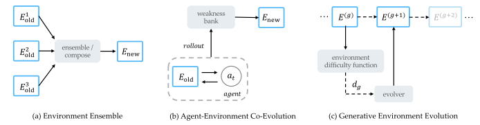
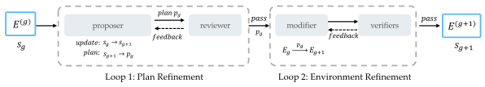
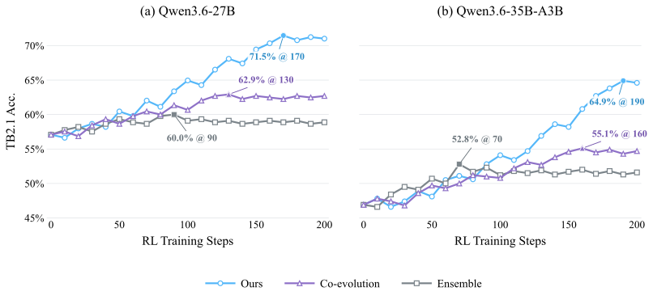
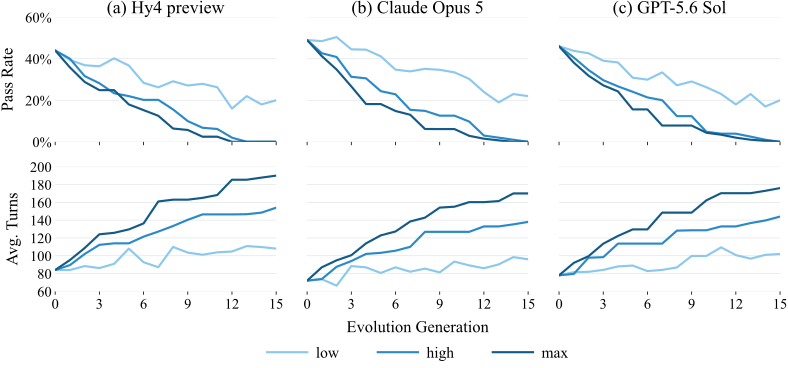
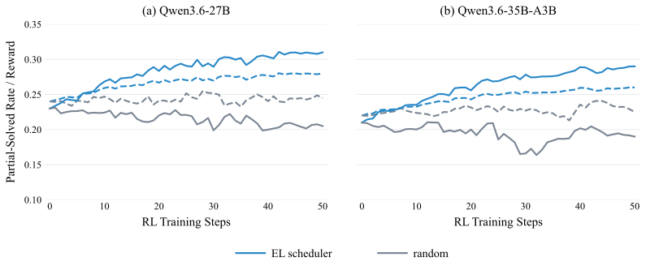
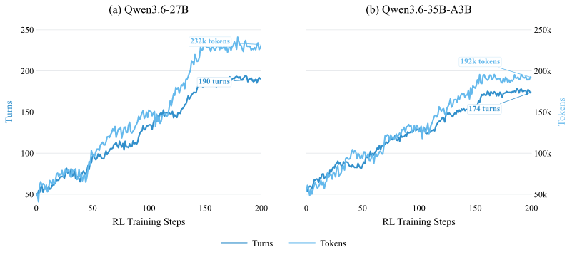
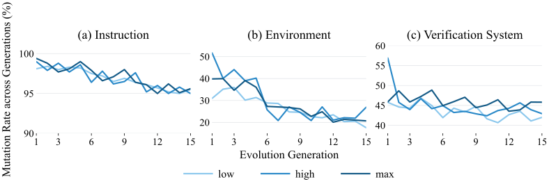

Execution length
Insert scenario–skill pairs to introduce additional dependencies along the solution path.
HUNYUAN RESEARCH · SEPTEMBER 2026
Hunyuan Team, Tencent
01 / OVERVIEW
Evolve environments off-policy.
Train agents generation by generation.
Environment Evolution is a framework from the Hunyuan Team at Tencent (Tencent Hy) for scaling terminal-agent training environments. It constructs verified lineages of increasing difficulty off-policy, then schedules them generation by generation during reinforcement learning.
As terminal agents improve, fixed environments can become too easy to provide useful learning signals. Environment Evolution generates harder environments independently of target-agent rollouts.
Three evolution directions guide construction. Two feedback loops check the plan and the executable environment. During reinforcement learning, a lineage scheduler introduces later generations as the agent becomes ready.
Terminal-Bench 2.1 improvement
Terminal-Bench 2.1 improvement
Verified lineages from each seed

02 / METHOD
Represent a solution as a sequence of scenarios and skills. Evolve the sequence along one of three dimensions derived from the multi-turn learning objective.
Insert scenario–skill pairs to introduce additional dependencies along the solution path.
Replace a scenario with a less common one while preserving its paired skill.
Replace a skill to require a less common capability under the corresponding scenario.
Each generation passes through two gated feedback loops.

The Proposer extracts the scenario–skill sequence, edits it in the chosen direction, and submits the resulting plan to a rubric-based reviewer. Rejected plans are revised.
The Modifier applies the accepted plan. An Oracle verifier checks solvability, an invalid-test verifier checks that an empty solution fails, and a rubric verifier checks quality.
If a direction exhausts its review or repair budget, the harness tries another direction from the same parent. A lineage ends only after all three directions fail.
03 / TRAINING
The Evolution-Lineage Scheduler starts with the earliest generation and advances according to the agent’s observed success rate.
8 rollouts per environment. Advance when the success rate is greater than 6/8. Move through environments within a generation before entering the next.
This helps avoid all-failure rollout groups and retains partially solved groups that provide useful GRPO learning signals.
04 / RESULTS
200 reinforcement learning steps from a shared RFT checkpoint. The comparison fixes the synthesis model and the total number of training environments.
| Environment scaling method | Qwen3.6-27B | Qwen3.6-35B-A3B |
|---|---|---|
| Environment Ensemble | 60.0 | 52.8 |
| Agent–Environment Co-Evolution | 62.9 | 55.1 |
| Environment Evolution Ours | 71.5 | 64.9 |
Evaluated on Terminal-Bench 2.1 every 10 RL steps, with accuracy averaged over five runs. Values are peak accuracy during 200 RL steps from a shared RFT checkpoint. Paper, Figure 7 ↗

Higher evolution effort changes a larger part of the scenario–skill sequence. High is the default, balancing increasing difficulty with control over each generation. Difficulty is evaluated independently with three frontier models.

Under matched rollout budgets, the lineage scheduler preserves more partially solved rollout groups during the first 50 RL steps. These groups contain between one and seven successful trajectories out of eight.

As the scheduler admits harder environments, both turns and tokens per trajectory increase. Tokens per turn also increase over the 200-step training run.

Evolution can change the instruction, executable environment, and verification system. The paper measures these at the token, file, and test-unit levels, respectively.

05 / PAPER
Scaling interactive and verifiable environments is critical for training terminal agents. As frontier models become more capable, environments synthesized from scratch become less challenging and thus provide limited learning signals. Recent co-evolution methods iteratively synthesize environments near the model's learnable frontier based on weaknesses exposed during rollouts. However, their dependence on on-policy rollouts limits generalization and the continuous provision of learning signals as the model becomes stronger.
In this paper, we propose environment evolution, which incrementally increases environment difficulty off-policy and schedules the evolved environments generation by generation during training to provide continuous learning signals. We derive three evolution directions that influence environment difficulty from the multi-turn learning objective and then implement evolution along these directions through a loop-engineered multi-agent harness. Quantitative rollout experiments with Hy4 preview, Claude Opus 5, and GPT-5.6 Sol show that environment evolution consistently produces more difficult environments. We validate its effectiveness on Qwen3.6-27B and Qwen3.6-35B-A3B through simple long-horizon RL training, improving their performance by 14.4 and 18.0 percentage points on Terminal-Bench 2.1, respectively.
Read the full paper@misc{fan2026environmentevolutionterminalagents,
title = {Environment Evolution for Terminal Agents},
author = {Zhiyuan Fan and Tinghao Yu and Yuanjun Cai and Jiang Zhou
and Jiangtao Guan and Jincheng Liu and Yun Yang and Dingxin Hu
and Zhuo Han and Xing Wu and Feng Zhang and Lilin Wang},
year = {2026},
eprint = {2609.04128},
archivePrefix = {arXiv},
primaryClass = {cs.AI},
url = {https://arxiv.org/abs/2609.04128}
}